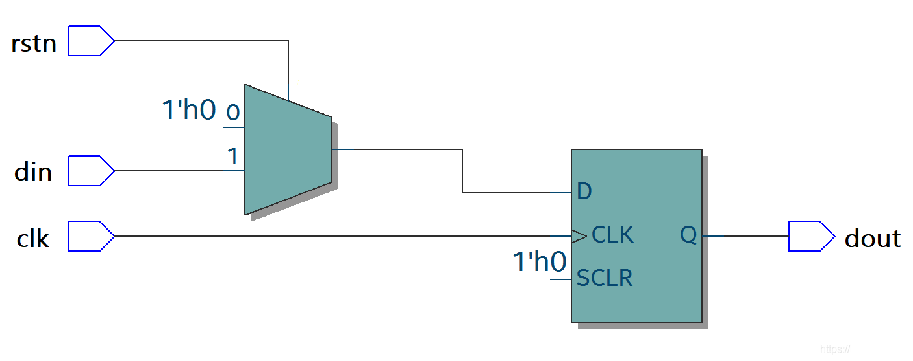

キーワード： 同期リセット， 非同期リセット
システムの電源投入後に明確で安定した初期状態を確保するため、またはシステムの動作状態が乱れたときに正常な初期状態に戻すために、デジタルシステム設計には必ずリセット回路モジュールが必要です。リセット回路の異常はシステム全体の機能異常を引き起こす可能性があるため、ある程度リセット回路の重要性はクロック回路に劣りません。
リセット回路は、同期リセットと非同期リセットに分類できます。
同期リセット
同期リセットとは、リセット信号がクロックの有効エッジに到達したときに有効になることを指します。クロックがない場合、リセット信号がどのように変化しても、回路はリセット操作を実行しません。
同期リセットの典型的なコード記述は次のとおりです。
例
input rstn, //同期リセット信号
input clk, //クロック
input din, //入力データ
output reg dout //出力データ
);
always @(posedge clk) begin //リセット信号はセンシティビティリストに追加しない
if(!rstn) dout <= 1'b0 ; //rstn 信号はクロック clk と同期する
else dout <= din ;
end
endmodule
この記述コードは、多くの場合次のような回路に合成されます。

同期リセットの利点：信号間が同期しており、リセット信号のグリッチを除去でき、タイミング解析に有利です。
同期リセットの欠点：ほとんどのフリップフロップセルには同期リセット端子がないため、同期リセットを採用するとロジックリソースを余分に消費します。また、リセット信号の幅は1クロック周期より大きくする必要があり、そうしないとリセット信号を逃す可能性があります。
非同期リセット
非同期リセットとは、クロックが到来するかどうかに関係なく、リセット信号が有効であれば、回路はリセット操作を実行することを指します。
非同期リセットの典型的なコード記述は次のとおりです。
例
input rstn, //非同期リセット信号
input clk, //クロック
input din, //入力データ
output reg dout //出力データ
);
//リセット信号はセンシティビティリストに追加する必要があります
always @(posedge clk or negedge rstn) begin
if(!rstn) dout <= 1'b0 ; //rstn 信号はクロック clk と非同期
else dout <= din ;
end
endmodule
このコードは、多くの場合次のような回路に合成されます。

非同期リセットの利点：ほとんどのフリップフロップセルには非同期リセット端子があり、追加のロジックリソースを消費しません。また、非同期リセット信号は処理を経ずに直接使用されるため、設計は比較的簡単で、信号の認識が迅速かつ便利です。
非同期リセットの欠点：リセット信号とクロック信号の間に明確なタイミング関係がないため、非同期リセットはタイミング上のremovalとrecoveryの不満足を引き起こしやすいです。また、非同期リセットはグリッチの干渉を受けやすく、予期しないリセット操作が発生する可能性があります。
非同期リセット同期解放
設計とリソースなどの考慮を総合すると、一般的なデジタルシステム設計では非同期リセットを使用します。
非同期リセットの欠点を解消するために、リセット回路はしばしば「非同期リセット、同期解放」という設計方法を採用します。すなわち、リセット信号が到着するときはクロック信号の同期を受けず、リセット信号が解放されるときにはクロック信号の同期が必要です。
非同期リセット、同期解放の典型的なコード記述は次のとおりです。
例
input rstn, //非同期リセット信号
input clk, //クロック
input din, //入力データ
output reg dout //出力データ
);
reg rstn_r1, rstn_r2;
always @ (posedge clk or negedge rstn) begin
if (!rstn) begin
rstn_r1 <= 1'b0; //非同期リセット
rstn_r2 <= 1'b0;
end
else begin
rstn_r1 <= 1'b1; //同期解放
rstn_r2 <= rstn_r1; //同期化のためのレジスタ段、タイミング差はさらに数クロック遅延させてよい
end
end
//rstn_r2 を同期リセットとして使用、リセット信号はセンシティビティリストに追加可能
always @ (posedge clk or negedge rstn_r2) begin
if (!rstn_r2) dout <= 1'b0; //同期リセット
else dout <= din;
end
endmodule
このコード記述は、多くの場合次のような回路に合成されます。

説明が必要なのは、リセット回路はより多くのハードウェアロジックと面積リソースを消費し、システム設計の複雑さを増すことです。リセット端子のないフリップフロップは比較的高い性能も持ちます。したがって、初期値が論理の正確性に影響しない一部のデジタル設計、例えばデータパス内のデータ処理部分や高速パイプライン内の一部のレジスタでは、最適な性能を達成するためにリセットを省略することを検討できます。
便利かつ迅速に非リセットロジックの他の機能をシミュレーションするために、チュートリアルのすべてのデジタル設計では、testbench から非同期リセットを導入しており、リセット回路のタイミング問題は考慮していません。実際にデジタルシステムを設計するときは、リセット回路を個別に、注意深く、慎重に設計する必要があります。